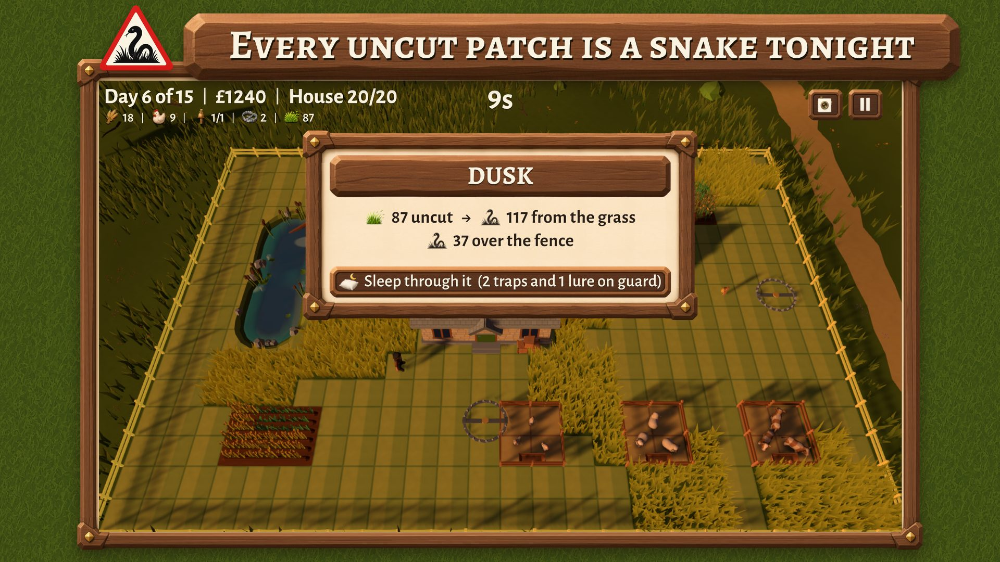
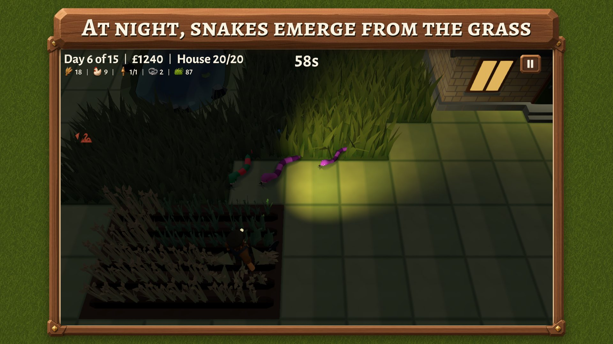
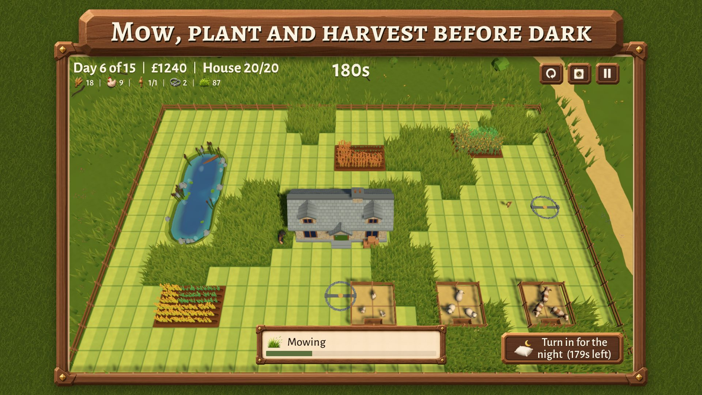
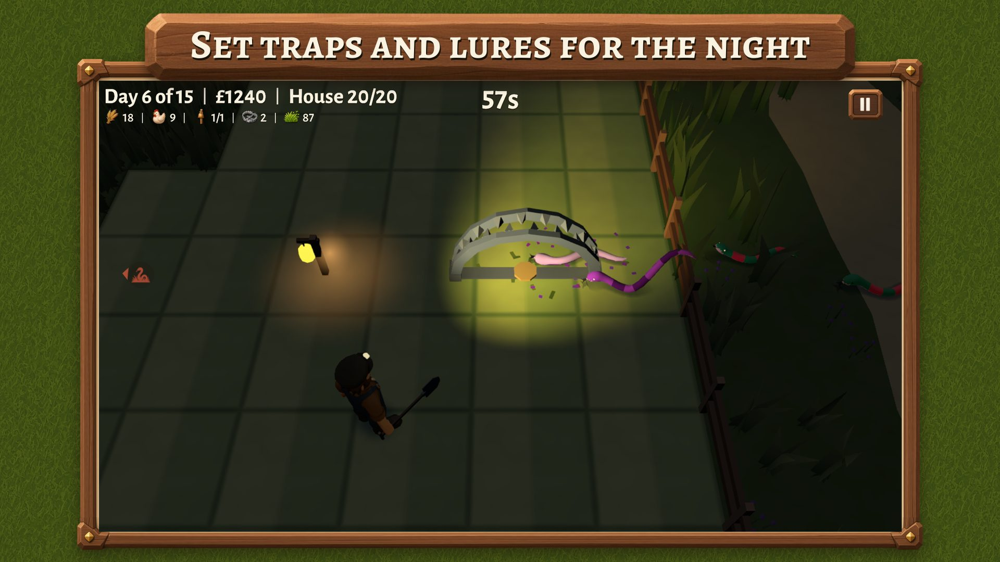
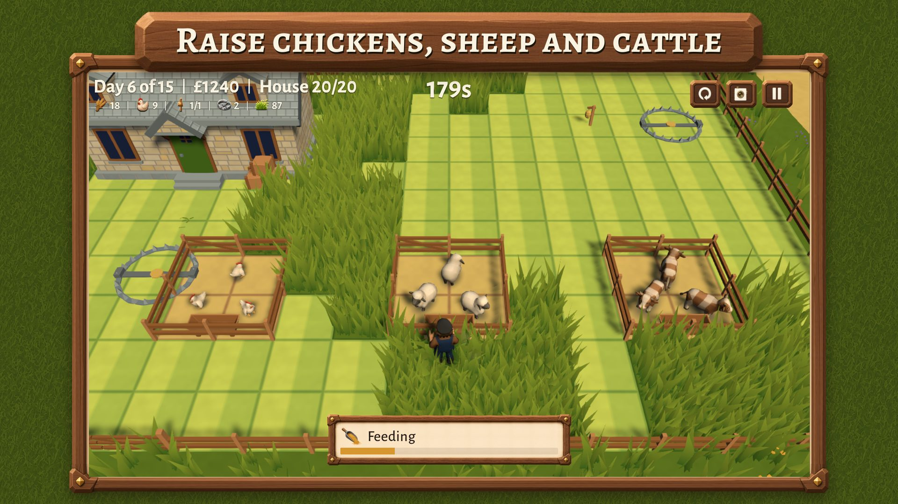
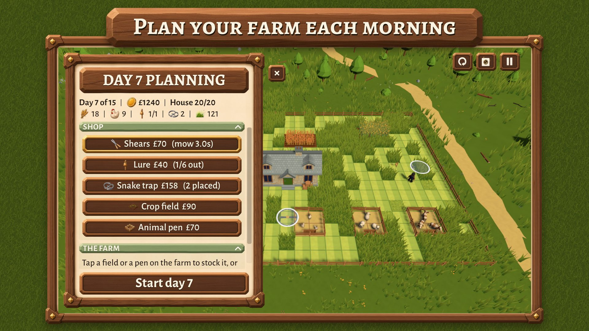
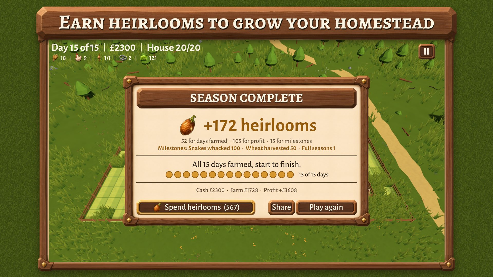
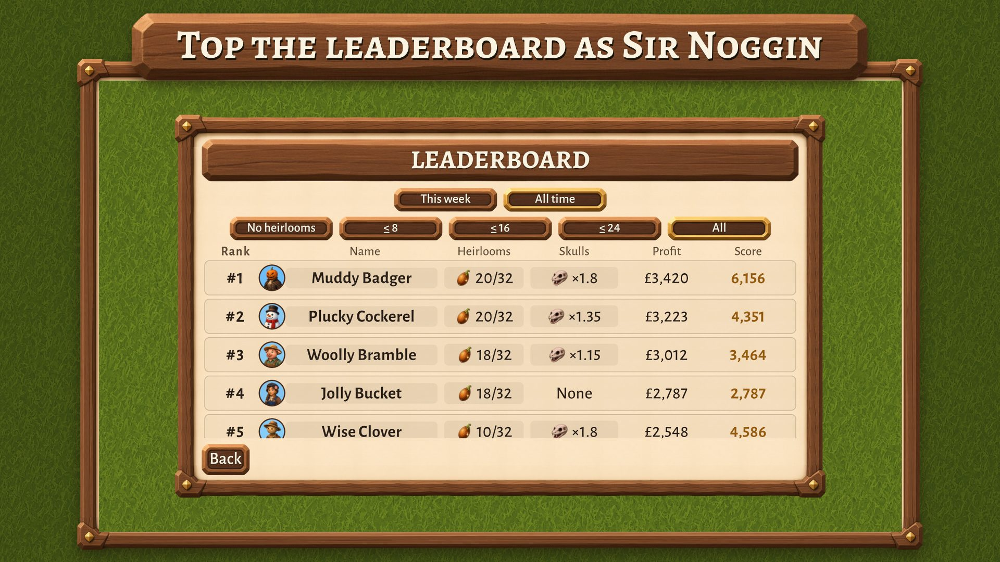
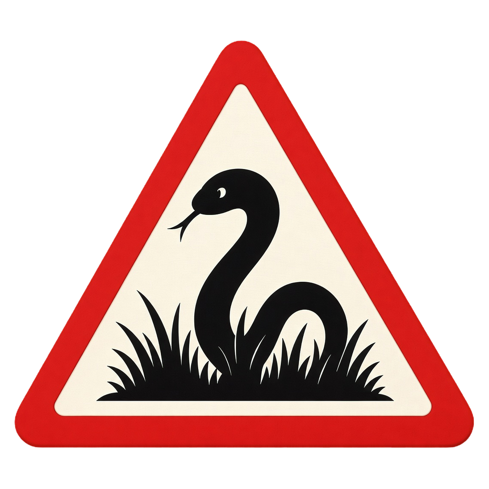
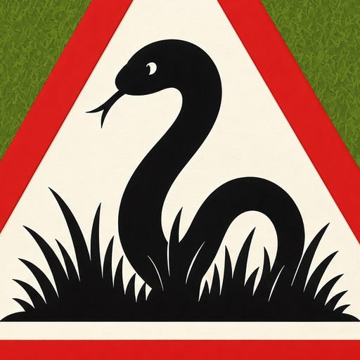

Press Kit
Snakes in the Grass · a farming game for Android · out 30 October 2026 in Ireland and the Philippines
Everything on this page — the logos, the icon, the feature graphic, the eight screenshots at full size and the fact sheet — is in one download, and is free to use in coverage of the game. Questions, review copies and anything else: snakesinthegrass.game@outlook.com.
Download the press kit (17 MB)
Or take what you need from the sections below.
Fact sheet
- Title
- Snakes in the Grass
- Developer
- Adam Plummer, a sole developer in the United Kingdom
- Released
- 30 October 2026, in Ireland and the Philippines, as a soft launch; other countries to follow.
- Platform
- Android 8.0 and up, phones and tablets
- Price
- Free to play. Optional rewarded ads, and three optional purchases: Remove Ads (£3.99), Sir Noggin (£1.99) and Jack Frost (£1.99). Nothing inside a season can be bought.
- Genre
- Simulation, strategy
- Language
- English
- Store
- Snakes in the Grass on Google Play
- Contact
- snakesinthegrass.game@outlook.com
What it is
Grandad left you the farm, and the grass. Every patch you don't mow by dusk is somewhere a snake can hide.
By day you farm: mow the long grass, sow barley, wheat and maize, keep chickens, sheep and cows, and sell what you grow. Every second counts, because the day is your real budget.
By night the snakes come out of whatever you left uncut. Light them up with your torch, whack them with your shovel, set traps and lures, and keep them off your crops, your animals and your house.
Fifteen days make a season, about an hour of play, and you can stop between any two days. Lose the house or run out of money and the season ends, but nothing is wasted: every season pays heirlooms to spend on the homestead, so the next one starts stronger.
What makes it different
Mowing is the strategy. In most farming games cutting the grass is a chore; here it is the decision the night is built on. The snakes come up out of whatever you left standing, so where you mowed by day is where you are safe after dark, and every day is a fresh puzzle rather than a routine.
Features
- A day-and-night farming game played in short, tense 15-day seasons
- 14 homestead unlocks to earn across seasons
- 10 skulls to make a season harder for a bigger payout
- Weekly and all-time leaderboards
- 39 Google Play Games achievements
- Seven farmers to play as, from Tom and Rosie to a scarecrow and a snowman
- Share a picture of your best farm
- Sign in with Play Games to keep your farm on a new phone
- Plays offline; no account needed
Trailer
Thirty seconds, 1920 × 1080. Download it (15 MB).
Screenshots
Eight shots, 1920 × 1080. Click one to see it full size, or take the lot as PNGs from the press kit.
















Logos and icon





The feature graphic is in the press kit, and on its own here: feature-graphic-1024x500.png (1024 × 500).

Using these
Use any of it, unchanged, in coverage of the game, as long as the game and the developer are named. Anything else, such as merchandise or the art as part of something else, please ask first.
The title is set in Alegreya SC, and the game uses Alegreya SC and Alegreya Sans throughout.
For a review copy, an interview or a question about how it was made, write to snakesinthegrass.game@outlook.com. It is one person answering, so expect a day or two.